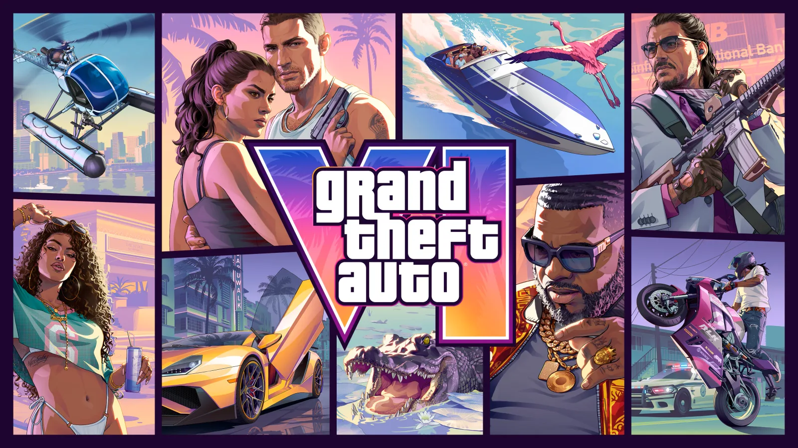
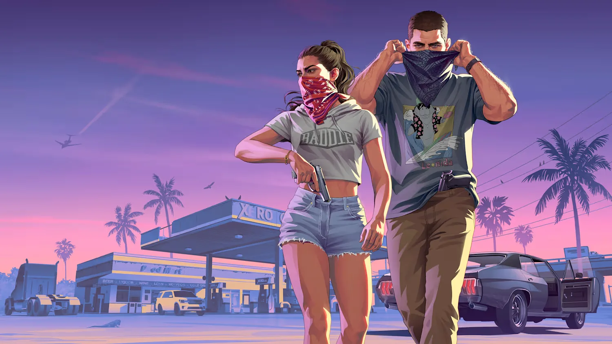
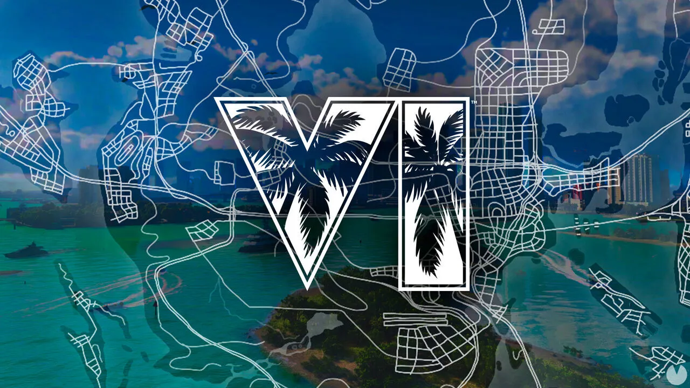
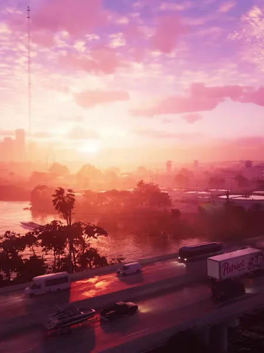
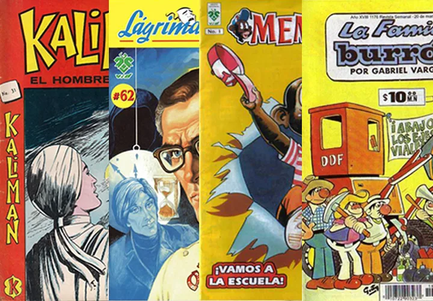
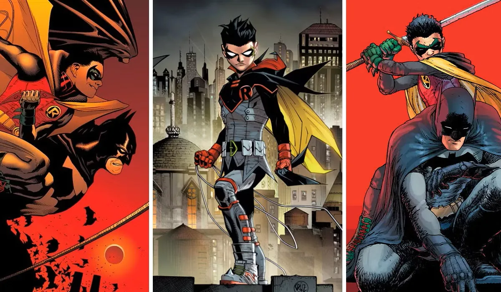
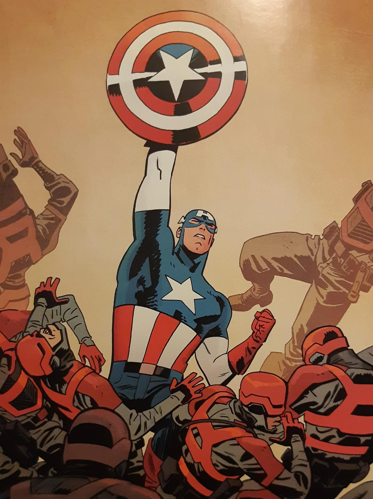

GTA 6 Y EL PESO DE LA HISTORIA:
¿PODRÁ SUPERAR UNA DÉCADA DE EXPECTATIVA?

Más de diez años han pasado desde que recorrimos las calles de Los Santos por primera vez en GTA V. Ahora, con el lanzamiento mundial fijado de forma inamovible para el 19 de noviembre de 2026, las miradas de toda la industria del entretenimiento están puestas sobre el regreso de la saga a Vice City con Grand Theft Auto VI. Con la presión de ser el producto cultural más esperado de todos los tiempos, Rockstar Games se enfrenta al reto técnico y narrativo más grande de su existencia. ¿Podrá el juego sobrevivir a su propio hype, o estamos ante el coloso que romperá el techo de los mundos abiertos?

💸 La cruda realidad del estándar AAA
La campaña de marketing ya ha encendido los debates en comunidades como Reddit e hilos especializados, revelando la nueva e incómoda realidad económica del videojuego: una edición estándar que apunta a los $80 dólares. Rockstar sabe que tiene el monopolio de la atención pública, al grado de que el reciente vistazo de 27 minutos estrenado en Netflix detuvo la respiración del internet. Sin embargo, la ambición cuesta cara, y los jugadores tendrán que pagar un precio prémium por entrar al estado de Leonida.

⚖️ El factor Lucía: Rompiendo el molde de la era moderna
La gran apuesta narrativa recae sobre Lucía, la primera protagonista femenina de la saga en su era contemporánea. No se trata de un simple cambio estético; su dinámica de crimen en pareja junto a Jason introduce un fuerte pilar de interacciones orgánicas y dilemas morales que promete alejarse de la clásica comedia satírica unidimensional de entregas pasadas. El reto para Rockstar es monumental: construir una narrativa madura y cruda sin perder la irreverencia criminal que define la identidad de la franquicia.
📊 La bestia técnica en números
| ESPECIFICACIÓN | GTA VI |
|---|---|
| ANIMACIONES | 600,000 |
| COMPARACIÓN GTA V | 55,000 animaciones |
| CAMPAÑA ESTIMADA | +80 horas |
| MAPA | 2x Los Santos, 3x RDR2 |
| RENDIMIENTO | 30 FPS (PS5 / Xbox Series X/S) |
A nivel de desarrollo, las especificaciones compartidas por medios como MeriStation demuestran que el juego es un monstruo sin precedentes en la actual generación de consolas:
600,000 animaciones: Una evolución destructiva frente a las 55,000 que usaba GTA V en 2013, buscando un fotorrealismo extremo en las interacciones.
Campaña masiva: Un hilo argumental principal estimado en más de 80 horas de juego.
Mapa colosal: Un mundo abierto que duplica el tamaño de Los Santos y triplica las dimensiones de Red Dead Redemption 2.
El sacrificio de los 30 FPS: La confirmación de que el título correrá inicialmente a 30 cuadros por segundo en PlayStation 5 y Xbox Series X/S ha abierto una profunda brecha de opiniones entre la fluidez visual y la colosal densidad de su inteligencia artificial.

💬 Reseña de anticipación: El veredicto final
GTA VI ya no compite contra otros videojuegos; compite contra el mito que el internet ha construido a su alrededor durante más de una década. La propuesta técnica y la escala del mapa prometen ser un punto de no retorno para la industria lúdica. Si Rockstar logra equilibrar la audacia de su narrativa bipartita con un rendimiento técnico impecable, el 19 de noviembre no asistiremos al lanzamiento de un juego, sino a la coronación del nuevo rey del entretenimiento digital.
Fuentes
[1] Rockstar Newswire — Launch date announcement
[2] En Perspectiva — El furor por GTA VI
[3] MeriStation / AS — 3 detalles clave de GTA 6
[4] El País — Primeras impresiones en exclusiva
[5] Xataka — Hemos visto 27 minutos de GTA VI
OTROS RUIDOS

5 cómics mexicanos que debes leer sí o sí
Obras maestras del noveno arte nacional.

¿Por qué Damian Wayne es el mejor Robin?
El hijo de Batman que venció a su destino.

Capitán América: La pesadilla de los nacionalistas
Steve Rogers, disidente político radical.